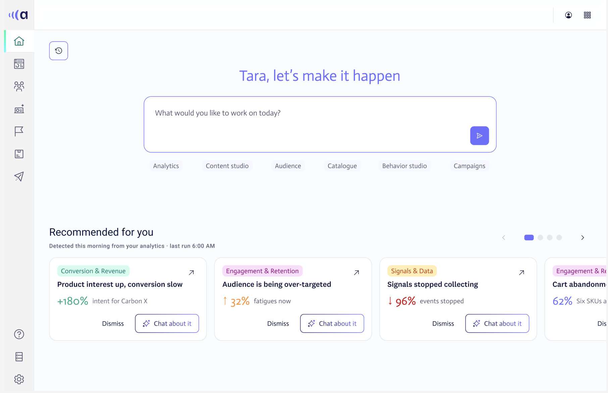
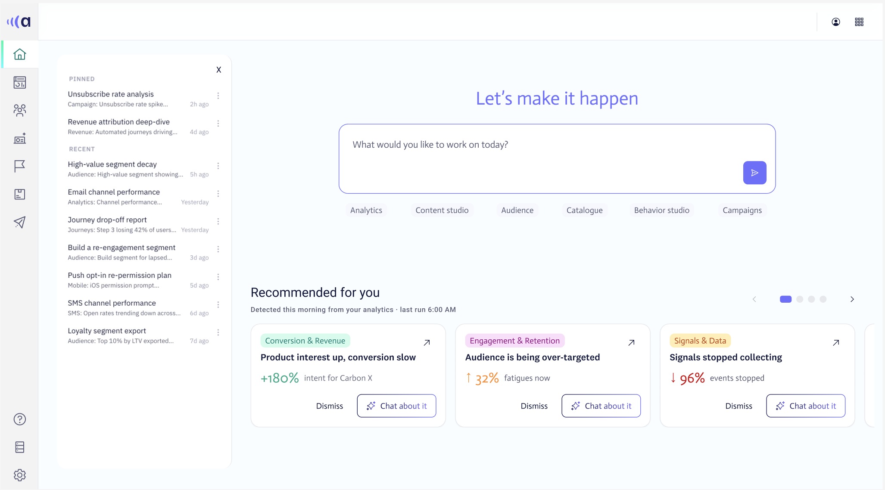
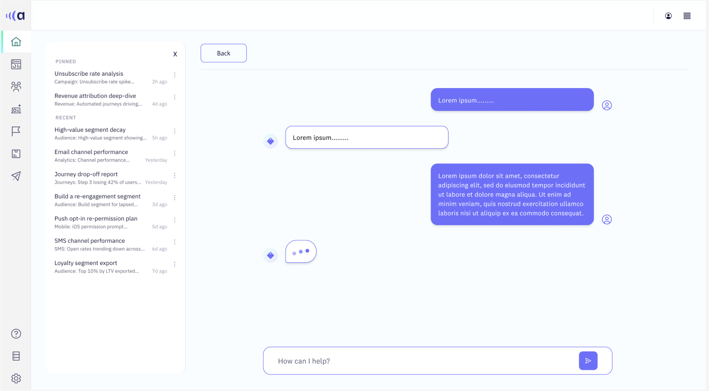

Recommended for you. A single starting point that turns real-time behavioral intelligence into clear next actions.
Acoustic is a real-time behavioral marketing platform built for B2C brands. It captures live customer signals: clicks, hesitations, return visits, product interest, enabling marketing teams to act on them before the moment passes.
This project explored a new home experience for Acoustic Connect. A single starting point that would help marketers move from “What is happening with my customers?” to “What should I send them right now?”
I designed an AI-powered homepage that brings together behavioral intelligence, audience signals, campaign performance, and a conversational assistant into one unified entry point. replacing a fragmented tool landscape with a single, intelligent workspace.

Homepage. proactive recommendations + conversational entry point


Left: full homepage with signal cards · Right: conversational AI flow
Marketers were drowning in signals but starving for action
Acoustic captures behavioral data in real time. That’s powerful, but the existing product experience made it hard to act on.
A typical workflow looked like: Log in → navigate to a module → find a report → pull a number → interpret the numbers → switch tools → build a campaign. High-intent signals were buried across separate modules with no unified view.
- Acting on a signal meant switching between 5 to 8 different tools
- The real-time advantage was lost by the time a campaign was built and sent
- Non-technical marketers found the behavioral data interface intimidating
Let the platform do the work of finding what matters
Acoustic already knew which customers were showing high purchase intent, which audiences were being over-targeted, and which campaigns were under-performing. The opportunity was to bring those signals to the surface before the marketer had to go looking for them.
The design goal became: make real-time behavioral intelligence feel as natural as having a conversation with a knowledgeable colleague.
Design an experience around 3 connected layers
Discover → Explore → Ask
Discover
The homepage proactively surfaces the signals that matter most right now, rather than presenting marketers with a blank dashboard. The interface leads with live behavioral opportunities such as products with rising purchase intent, audience segments showing fatigue, behavioral shifts in the last 24 hours, and emerging high-value customer segments.
Explore
A marketer who spots a high-intent segment can move directly into deeper investigation without losing their starting context. Acoustic Connect organizes the full audience picture across Analytics, Content Studio, Audience, Catalogue, Behavior Studio, and Campaigns. The homepage acts as the connective layer.
Ask
The most important interaction is the AI assistant: a conversational layer built directly into the homepage. Instead of requiring marketers to navigate Acoustic’s full module structure, they can simply ask what they need. Designing the Home Experience: the first screen leads with a simple prompt designed to feel more like opening a conversation than launching a campaign tool.
Trust
Acoustic’s behavioral data is only valuable if marketers trust the signals enough to act on them. The goal was to make the AI feel like a knowledgeable colleague, not a black box making mysterious recommendations.
01 Language
Marketing outcomes, not data terminology. Signals are described in terms of revenue, engagement, and campaign impact.
02 Context
Every recommendation shows when the signal was detected and what behavioral data it is based on.
03 Meaningful data
A specific metric paired with a plain-language explanation of what it means for the marketer’s goals.
04 History
Conversational history is preserved so marketers can return to an earlier question without starting over.
05 Consistency
The same signal that appears in a recommendation links directly to the underlying Audience, Behavior Studio, or Campaigns module. No dead ends.
Solutions
Make behavioral intelligence feel like a marketing superpower, not a data science project.
Reduce cognitive load
Marketers shouldn’t need to understand Acoustic’s full data model to get value from it. The homepage does the heavy lifting.
Surface signals proactively
Acoustic already knows which customers are ready to convert. The product should lead with that, not bury it in a module.
Keep context intact
Moving from a live behavioral signal into a campaign conversation should feel like one continuous task, not a series of context switches.
Speak in marketing terms
The interface speaks in terms of revenue, engagement, and campaign outcomes, not data attributes, behavioral scores, or model outputs.
Make AI approachable
The conversational interface gives non-technical marketers a familiar way to interrogate Acoustic’s most sophisticated behavioral capabilities.
Instead of: Signal detected → buried in a module → marketer never sees it
Desired experience: Signal surfaces → marketer asks → AI explains → conversation should lead into campaign launched
The numbers moved, and so did the conversation
The most important lesson from this project was that behavioral marketing UX isn’t about showing marketers more data. It’s about helping them answer four questions faster:
- Which customers are ready to act right now?
- Why is this signal worth my attention?
- What should I send them, and when?
- Did it work?
The Acoustic homepage brings those pieces together. Not a smarter dashboard. A smarter starting point for the work that actually matters.